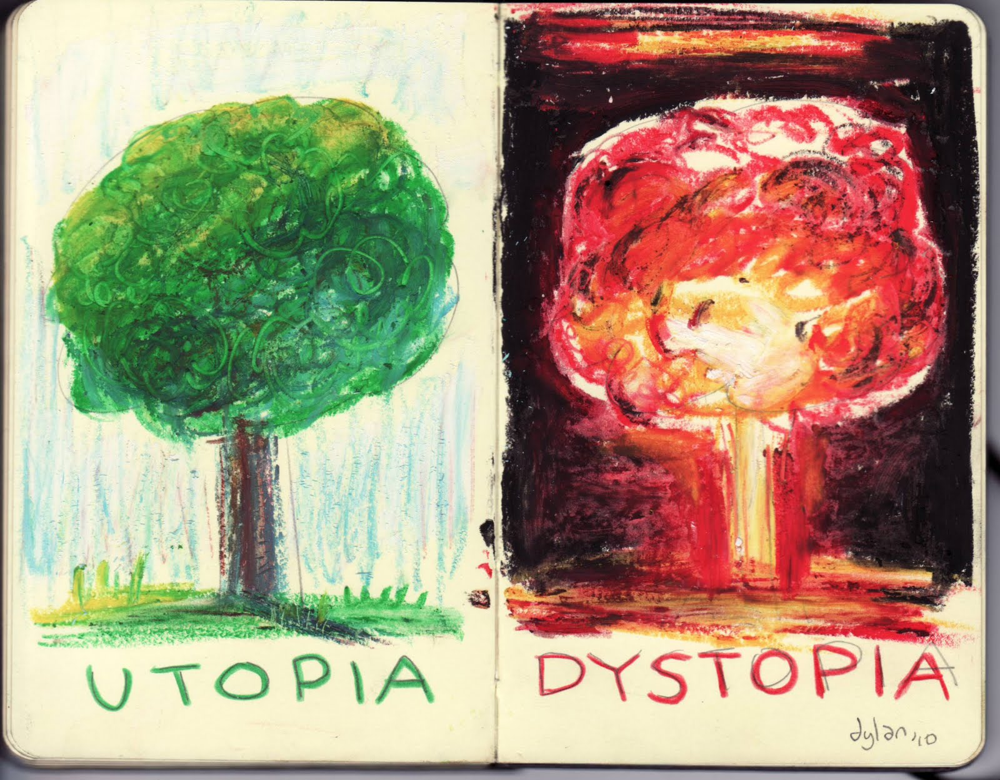
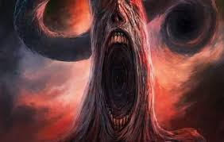
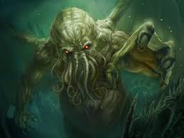
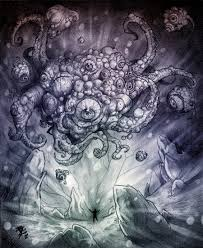
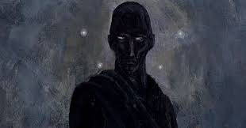
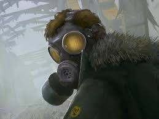
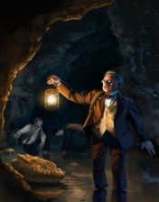

Los libros, deleite para la imaginación de las mentes humanas; mundos nuevos donde puedes volar, puedes ser alguien más, o simplemente desear no haber nacido ahí, pero, de alguna forma, lo disfrutas (hablaremos de esto luego).
¡Oh, mundos nuevos! ¡Oh gran viaje!
Aquí colocaré los resúmenes, detalles, curiosidades y demás cosas de los libros que he leído hasta ahora.Habrá de diversos géneros, generalmente de suspenso, que he disfrutado mientras leía y me han transportado a otros mundos.
Para empezar, he de admitir que los géneros que más prefiero son aquellos de situaciones difíciles, desesperanzadores. Sí, es un poco raro, pero vaya que son interesantes. Por ello, rechazo, al menos por ahora, a los géneros de drama, romance, comedia (no tanto, aunque solo he leído uno de este tipo), autoayuda, fantasía y parecidos. Dicho esto, aquí están los géneros o subgéneros literarios de mi preferencia:
Mi favorito, por mucho.
La distopía es un subgénero de la ciencia ficción que representa a una sociedad ficticia no deseada o con varios aspectos negativos. El término "distopía" fue creado por John Stuart Mill, a finales del siglo XIX, como anónimo de utopía, término creado por Tomas Moro 3 siglos antes que se refiere a una sociedad ideal. A menudo, en las novelas publicadas por varios autores, se busca transmitir un mensaje acerca del entorno o momento que viven; un claro ejemplo son 1984, Farenheit 451 y Un Mundo Feliz, que expresaban el rechazo o crítica hacia el totalitarismo y vigilancia masiva, la censura y el consumismo respectivamente.
Sintetiza muchas historias que se han visto, no solo en libros, sino también en películas. Combina grandes avances tecnológicos y sociales en sociedades futuristas o alternativas. Obras como Yo, robot o Dune, y las distopías existentes son buenos ejemplos de ciencia ficción.

Creado por el escritor estadounidendes Howard Philips Lovecrat (conocido más como H.P. Lovecraft o solo Lovecraft), es un subgénero de la ficción de terror, centrado en la insignificancia del ser humano antes seres, o deidades, que habitan los lugares más recónditos del Cosmos. Muchas de las obras de Lovecraft también usan recursos del género detectivesco; además, se evidencia un gran conocimiento sobre geografía y acontecimientos históricos que forman parte de este universo.
Sin duda, uno de los mejores tipos de literatura. Pensar en criaturas como el temible Cthulhu, un dios Primigenio que habita en los océanos, esperando a dominar el mundo; Yog-Sothoth, un dios Exterior que posee conocimiento de todo y servirle a él supone sacrificar vidas y corromper la mente; Nyarlathotep, el manipulador y engañador, encargado de obedecer las ordenes de los Dioses Exteriores; Azathoth, diedad suprema, dormido para que no sucumba el caos y la destrucción de la exsitencia, su propia creación. Y muchos más.
  Similar a la distopía, pues también presenta un entorno indeseable y negativo. El género postapocalíptico parte de un desastre a gran escala: una pandemia mundial que diezme a la población, una Gran Guerra, eventos astronómicos catastróficos (como el choque de un asteroide), entre otros. De este modo, los humanos que quedan se ven obligados a iniciar de nuevo, con nuevas reglas y conductas con el objetivo de sobrevivir ante el nuevo y hostil mundo.
Nos transporta a partes desconocidas de nuestro mundo que incluso no preguntamos: "¿Será real esto?". Obras, principalmente de Julio Verne, describen situaciones donde el o los protagonistas exploran nuevos entornos, con características únicas e incluso con propiedades físicas diferentes a las que conocemos. Sin duda una buena forma de viajar con la mente.
Aquí se presentan los libros que he leído hasta ahora, serán más pronto... ¡muchos más!


Aquí puedes descargar muchas de las obras de esta página (shhh, que nadie se entere).